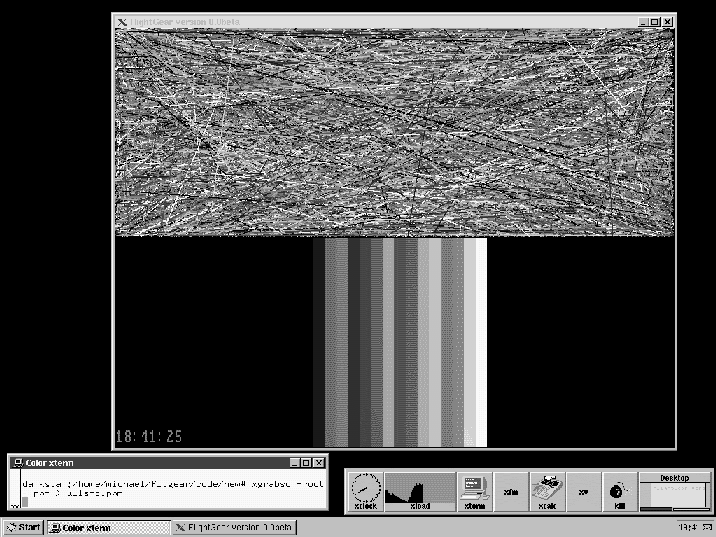

Flight Gear - still (k)ein new flight simulator
Dr. Michael Basler, Jena
PC Flugsimulationen, anyhow such like Microsoft flight simulator, ATP or Flight Unlimited, are actually cheap. If one compares the price with that the necessary hardware, which should be rather High ending, almost already is for the program the disappearing size.
Nevertheless, in order?Flight with Gear their own alternative to the established programs " were a set of flight simulator fans in the Internet to develop. This simulator should be even modifiable free of charge for everyone freely available and with the provided source code. Such a thing can quite function: The development of Linux, which GNU c-compiler or the TeX/LaTeX packages has that very impressively demonstrated.
The question is naturally justified whether itself the expenditure in view of of prices, those for instance with the FSFW95 clearly under 100. - DM are situated, at all are worth. The challenge came also from another direction: The popularity, which for instance the FS5 attained, which are as Free or Shareware to a large section the many hundred scenes, were certainly developed airplanes and panel, to owe. All this is to be owed however to the with the utmost care decoding work some fewer experienced programmers, who often resemble a guessing game. By the companies become the programming interfaces, which APIs documents, in the rarest cases. The Flight Gear project sat down to the target to develop a simulator which is from the beginning openly created: All APIs is to be documented, and where that is not the case, one can take these from the provided source code easily.
A second problem: " simulators must address the mass-market, so that development costs pay. That leads to it that on easy operability, Multimediaeffekte etc. is often put more value than FORWARDS on correct placing and current frequency dispatching of all and to ILS, realistic radio traffic and some different one. In addition it comes that it lasts with a product development cycle from approximately two years for a very long time, until recognized alteration desires can be considered and corrected. Some that serious simulator pilots require themselves, is not to be implemented in this concept under economic criterion probably at all.
Besides there is a further reason, why the flight simulator fans require themselves a?eigenen " simulator. Almost the entire flight simulation software is adapted with quite few exceptions only to a platform: the?Wintel PC ". The MacIntosh not supported by Microsoft no more and also for the different Unix derivatives (above all Linux than ideal platform for private users) gives it nothing comparable to the FS5/FSFW95. The reason is the same as above: Under commercial criterion that is not worthwhile itself.
Fig. 1: The Flight Gear Windows 95-Icon.
The direct suggestion to?Flight the Gear project " decreases/goes back on Dave Murr, a 16-jaehrigen US-American pupil. Hirngespinste of an overeager Pennaelers it does not concern however: Dave Murr is for now about 2 years co-editor of the very successful Internet Zines?FS News ". The suggestion was discussed both in the group of new rec.aviation.simulators and held in the mailing list fltsim@grove.iup.edu extensively - also controversially - and finally?Pflichtenheft in a first Proposal, a type ", which is present in the meantime in the third version.
Over the following points itself the developers became in the meantime to a large extent united:
At present about 6-8 people operate actively on?Flight Gear "; into (all open) the developer list however far more entered themselves. Naturally it is clear that e.g. the scene designers can only correctly begin if the diagram output and the Kernel in the fundamentals?stehen ".
(whether thereby to * the bgl Structure well-known of the FS5/FSFW95 or defined a new format is to be fallen back, is still open. First would have naturally the advantage that with an impact an enormous supply of scenes immediately for the order of statuses. Simultaneously however the danger exists that one thereby also a number of basic limitations * of the bgl Format with?hinueberschleppt ".)
Up to the scene Design is however also still something time. After in the first weeks and months first conceptional questions were discussed, to have itself in the meantime some beherzte programmers put and begun to write the first modules.
This is natural the elementary diagram routines, the keyboard entry etc.. It is to be owed above all Eric Korpela (University OF California, Berkeley) that substantial the one in the meantime on (almost) all anvisierten platforms it can to be compiled and run. In the meantime we have no longer only Bruckstuecke of program code, which and are gone by eMail, but a correct executable program. Figure 2 shows a Screenshot.

Fig. 2: A Screenshot of?Flight Gear " under Linux? still no flight simulator, but important diagram routines.
The jets in the upper half screen are not static, but huschen rapid over the display. How goes quickly on the different machines, already obtains an impression of the future picture repeating rate. The strips in the lower half are the at the beginning of a future panel. Our newest achievement is?Uhr ", which displays the system time. Who is experienced something, thereby quite a 2-Minuten-Standardkurve can fly...
Parallel to it on further modules one operates. Curtis Olson (University OF Minnesota, Minneapolis) has ACM, a likewise freely available, but?zerlegt only under UNIX executable military simulator, " and intended Kernel modules for our purposes adapted. (of me wrote) an installation guidance is present in the meantime likewise. Further information about the concept, the current status, the developers, the modules and much different one obtains the Flight Gear homepage
http://www.menet.umn.edu/~clolson/fgfs /
With security, if this article appears, some will then be already again outdated. Who does not shrink from itself to experiment with still incomplete programs can download itself also the current code from there. Completely compiled and executable versions for DOS and Linux (ELEVEN) are situated likewise on the server like the complete source code. Who installed the GNU c-compiler, can try, to compile Flight Gear on the basis the installation guidance. Perhaps or other one finds even the fun to help with the development.
However is not experiments everyone thing. Most reader of the FSFD it will probably nevertheless rather concern to fly. I must say therefore clearly: A finished Gear flight simulator, " most comparably with the FSFW95?Flight it up to the appearance this article will not give. Therefore the locking question: When will Flight Gear be so far that one can fly thereby? The estimations go here quite far apart. Pessimists derived the man-years measured, which are in the FS5, and from it one development duration from 10 years. Optimists are the opinion that one can fly in a half year with surely still modest Szenierie with Flight Gear at least. I would say: Look nevertheless in a half year again times with us past. If the things run further so well as before, you can start then perhaps actually.